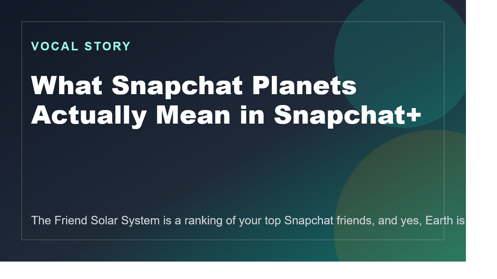

Snapchat’s own support pages describe an eight-planet Friend Solar System that ends at Neptune.
Snapchat+ feature guide
Snapchat planets look playful, but people read them far more seriously than the app probably intended.
The Friend Solar System in Snapchat+ is just a ranking of your top Snapchat interactions, yet it feels symbolic enough that people treat it like friendship evidence. The confusion gets worse because the internet keeps spreading the wrong planet list.

First-time Snapchat+ subscribers may need to enable it before they see the feature.
The planets show relative Snapchat interaction, not the full truth of a friendship.
Why this feature gets misunderstood so easily
Snapchat is very good at turning ordinary app activity into social drama. That is why the planets feature works so well. It takes a ranking based on Snap and Chat frequency and makes it look like a miniature social universe. The design is playful, but the interpretation becomes emotional almost immediately.
The other reason the feature stays confusing is that people keep repeating fan versions of the planet order instead of checking Snapchat’s own documentation. Once a chart with Pluto starts circulating, it spreads because it feels neat, not because it is right.
The three useful pages in this guide
More from our sites
Explore a few more live pages from the same publishing network.
This page sits inside a wider set of live guides, recaps, and utility pages. Use the short list below when you want a few direct jumps without loading a crowded directory page first.
- Full live site directory - Use the full network directory if you want the wider set of tools, recaps, guides, mirrors, and supporting posts.
- Why Viral Footage Involving Minors Should Be Verified Before You Share It - Open Why Viral Footage Involving Minors Should Be Verified Before You Share It for another live page from the same publishing network.
- World Quantum Day 2026 - Open World Quantum Day 2026 for another live page from the same publishing network.
- Fire Kirin XYZ Guide - Open Fire Kirin XYZ Guide for another live page from the same publishing network.
More from our sites
Explore a few more live pages from the same publishing network.
This page sits inside a wider set of live guides, recaps, and utility pages. Use the short list below when you want a few direct jumps without loading a crowded directory page first.
- Full live site directory - Use the full network directory if you want the wider set of tools, recaps, guides, mirrors, and supporting posts.
- Why Viral Footage Involving Minors Should Be Verified Before You Share It - Open Why Viral Footage Involving Minors Should Be Verified Before You Share It for another live page from the same publishing network.
- World Quantum Day 2026 - Open World Quantum Day 2026 for another live page from the same publishing network.
- Fire Kirin XYZ Guide - Open Fire Kirin XYZ Guide for another live page from the same publishing network.